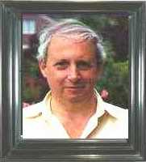

|
|
|


- I am a 72 year old gatherer of stamps. I guess I have been doing just that for a good part of my life. Now after seeing your site I would like to try my hand at collecting. And works of Art would be my thing. I don't think, I have a work of Art in the whole bunch, but as I said " I gathered them " so I will pay them the honor of looking at them. Who knows what I might find. I am working the quiz; not easy for me but fun . I am a PASIC member and glad of it. Wonderful page. Regards, Duke. 1/12/01.
- I very much enjoyed perusing your columns. The one I commented on was one of about fifteen. Terry R. 1/21/01.
- J'ai visité votre site avec grand intérêt ce jour. Je vous félicite, il est très agréable et très instructif. Seb. D. 1/26/01
- I have viewed your website today. It is wonderful and in the same time amazing. No wonder that the website and of course you have gotten so many awards. Sier. 1/28/01.
- Congratulazioni per il vostro immenso data base!! E' uno strumento veramente utilissimo. Ciao. Lamberto D. P. 2/7/01.
- I have used your site to teach how to capture small and detailed, colorful images. I use it also in my class on Web navigation and the use of links. Using such approach I keep my students "plugged" all the time, and not bored by strictly medical subjects. Recently, I used the images of Venus by Botticelli to discuss STD's (sexually transmitted diseases = venereal - from Venus - diseases), and believe me, it was a success! Next time I discuss depression and mood disorders I will use the page on Denmark!! Keep up your great site in behalf of all stamp collectors! Joao Carlos P. 2/18/01.
- Victor: Once again you have given us a thing of beauty. Thank you for sharing this page (Fabergé) with us. Blair. On RCSD, 2/19/01.
- Victor has once again done an admirable job of bringing art to the masses. Bob. On RCSD, 3/02/01.
- E interesant ceea ce incercati sa faceti. Filatelistii au nevoie de asemenea pagini. (It's interesting what are you trying to do. The philatelists need such pages). Corina. 2/25/01
- Good work! I really like this site! I found my old collecting of stamps this Christmas, and that's it! It's all I'm thinking of this days :o) I'm very interesting in art, so it's naturally that one of my favorite collecting group is art on stamps. Christopher. 3/01/01.
- The site and the database are close to be perfect! Thank you!!! Roman, 3/13/01.
- Hello Victor! I am impressed by the site. The information is clear, concise and easy to follow. I just joined the online Paintings and Arts on Stamps club. I have a small stamp collection that my grandmother started me on as a child. I am a total amateur but I love to see and learn more as often as possible. I thank-you for your time and your great website. Sheryl O. 3/27/01.
- I am a lactation consultant in the USA. I collect stamps that portray breastfeeding mothers and babies. Many of the old masters used mothers and babies as their subject matter. I am interested in stamps that show this subject. Karen. 4/1/01.
- Hi. Your site has definitely helped me in my search for Hiroshige stamps. Jessica. / I would like to use this site to collect stamps of arts. Hong-sik P. 4/3/01.
- Terrific Home page :-) Wendy. / The stamps scans are perfect. Wlodek. / Thanks for the excellent database. Claudiu O. 4/9-14/01.
- Hola Victor. Esta pagina es maravillosa, gracias! Carlos Q. 5/1/01.
- I think your web site is wonderful and very useful for the painting stamps collectors. I would like to be a member of your Club. Jose Luis. 5/23/01.
- Congratulations! I think your web site is wonderful and very useful for the painting stamps collectors. I would like to be a member of your Club, and so I wrote these fields to join the PASIC. Jose Luis. 5/23/01.
- Hello Victor! It's nice to having found your web today. I'm sure it will give me more useful information to collect Painting stamps. Yu W. 6/8/01.
- I think this site is one of the best that I've seen so far. Very organized and comprehensive. Thanks to everyone who put in great effort into this. Clarisse M. 6/12/01.
- He observado a traves de vuestra página lo interesante que es la pintura en la filatelia, no solo por el hecho de la pintura como arte sino de la filatelia como arte. Les doy calurosas felicitaciones por su dedicación, esmero y entrega en la publicacion de dicho Web. Eddy Francisco. 6/20/01.
- Most beautiful site to view great art on stamps. Kudos to you Victor and your passion for stamps and art. Ellen M. 7/7/01.
- Its the best site on philately I have come across. Gireesh P.It appears to be an excellent effort, which my wife (who is an artist) may also find useful. Paul K. 7/12/01.
- The website is fantastic and I am recommending it to a friend to browse on it and I am sure she will be joining PASIC. I can't help but marvel at what a fantastic job you have done and are doing with the website. Ella B. 7/15/01.
- What a wonderful work it is. I enjoy this Home Page very much. Tadashi M. Bin das erste mal hier, finde die Site grandios! Wolfgang. 1/12/02.
- What a wonderful site you have created. I have just visited it and am impressed about the quantity of art stamps you show. I collect art stamps myself since a long time, and will use your site as a handy reference. I have just joined your club and hope to have a great time there. Annie R. A. 2/25/02.
- Excellent site for motivation and education of history of art through philately. Krishnappa V. 2/28/02.
- Thank you for your dedication to this wonderful Hobby. I have been a closet collector for 15 years. I have never dedicated that much time to learn that basics, just knew I liked Art on stamps so I horded all that I came across. I do a far amount of collage and have used many of the images in my work. All that I have used have been used stamps. Thank you again for your hard work! Janis Sweet H. 7/3/02.
- I like to be in your famous club of pictures on stamps and I hope to make many friend in exchanging about our distinguished theme. Good luck and many thanks. Lucian R. 3/8/02
- ME PARECE MERITORIO, HAZE TIEMPO ANDABA BUSCANDO ALGUNA REFERENCIA SOBRE SELLOS ACERCA DE ARTE Y SU INFORMACION ME AYUDARA A REALIZAR UNA COLECCION. GRACIAS. Javiez M. 3/10/02
- Am gasit in sfarsit un site necomercial prin care sper sa-mi fac noi prieteni!!! (I have finally found a non-commercial site through which I hope to make new friens) Constantin M. 3/27/02
- Good website, an educational one. I enjoyed it very much. Steven K. 3/29/02
- I am very very pleased with this site since I collect art related stamps and wish you lot of new issues and continue you excellent work. Ravindren. 4/8/02
- Exciting-informative-Helpful in upgrading my collection on ROSES having a chapter "Rose in Great Master's Paintings" Dr. Satyenda K.A. 4/20/02.
- Excellent job done and very good resource guide for the artists, research scholars and students in pursuing their carrier in the visual art field. Venkatesh K. 5/24/02
- This is a fantastic site, I can't wait to go through the database and begin to put my art collection in some semblance of order. It's a thrill to see that someone (s) have taken so much time and effort to put this together. Malgorzata W. 6/222/02
- Félicitations pour l'élaboration de ce site et de permettre de partager avec vous l'amour de la peinture à travers la philathélie.teterel. 11/12/02
- This is my first visit to the site and I found it to be an excellent site. If only other topics had such a comprehensive site. John E. 11/16/02
- Thank you for an excellent site. You have
enabled me to add to my list of "Raphael" stamps, and other paintings
with a historical theme. 01/07/03. George F.
Thanks a lot to all of you for your kind words! Please continue to send me your opinions and suggestions. You are kindly invited to click here in order to send me a message now.
Yours truly Web Publisher
and Stamp Master,
Victor Manta, at Belle Orpondia, in Switzerland.
|
 |
 |
||
 |
|
||
| Member of the Union of Swiss Philatelic Associations | |||
| President of the Paintings and Arts on Stamps Internet Club | |||
| The Webmaster | Founder of the Philatelic Webmasters Organization | His main consultant | |
| Started:
1/12/01. Revised:
12/04/08. |
||